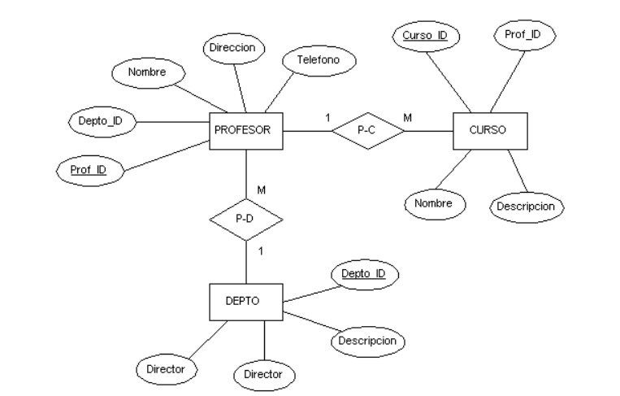
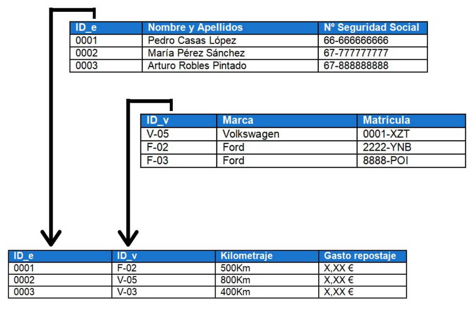
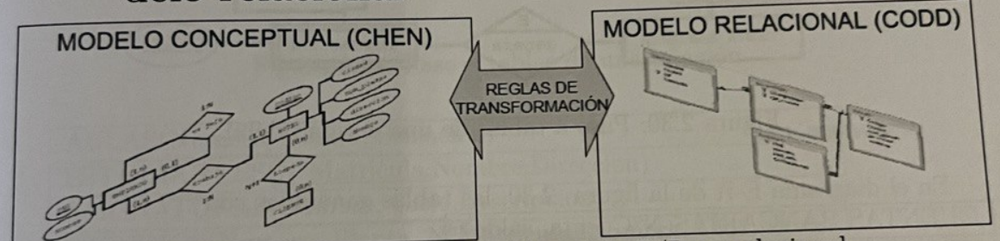

En esta Unidad de Trabajo veremos como hacer el diseño conceptual y lógico de una base de datos.
Empezaremos elaborando el modelo conceptual usando diagramas Entidad-Relación y Entidad-Relación extendidos. Este diseño es de más alto nivel, más próximo al usuario y más alejado del diseño físico de la BD.

A continuación, a partir del modelo Entidad-Relación, procederemos a generar el modelo relacional, el cual ya se halla muy próximo al modelo físico de BD.
Veremos las reglas de transformación que hemos de seguir para ello.

Por último deberemos normalizar las tablas obtenidas para evitar redundancias.
Resumiendo, los 2 modelos lógicos, de mayor a menor nivel de abstracción, que veremos en este tema son:
- Modelo Entidad-Relación (extendido)
- Modelo Relacional

El siguiente paso será realizar el diseño físico de la BD a partir del modelo relacional.
El diseño de una base de datos consiste en extraer todos los datos relevantes de un problema, por ejemplo, saber que datos están implicados en el proceso de facturación de una empresa que vende artículos de informática, o, que datos son necesarios para llevar el control de pruebas diagnósticas en un centro radiológico.
Para extraer estos datos, se debe realizar un análisis en profundidad del problema, para averiguar qué datos son esenciales para la base de datos y descartar los que no sean necesarios.
Una vez extraídos los datos esenciales comenzamos a construir los modelos adecuados. Es decir, construimos, mediante una herramienta de diseño de base de datos, un esquema que exprese con total exactitud todos los datos que el problema requiere almacenar.
Es algo equivalente al dibujo de un plano previo a la construcción de un edificio.
Además, previo al diseño es necesario realizar una primera fase denominada de análisis.
Antes de pasar a diseñar una BD hay que tener claro que es lo que queremos hacer. Para ello, típicamente los informáticos se reúnen con los futuros usuarios del sistema para recopilar la información que necesitan para saber que desean dichos usuarios.
Normalmente se hace una reunión inicial a y partir de ella se elabora una batería de preguntas para entrevistar a los usuarios finales en una segunda reunión y obtener de ella una información detallada de lo que se espera de nuestra BD.
De estas entrevistas, se extrae el documento más importante del análisis, el documento de Especificación de Requisitos Software o E.R.S.
A partir de dicha E.R.S. Se extrae toda la información necesaria para la modelización de datos.